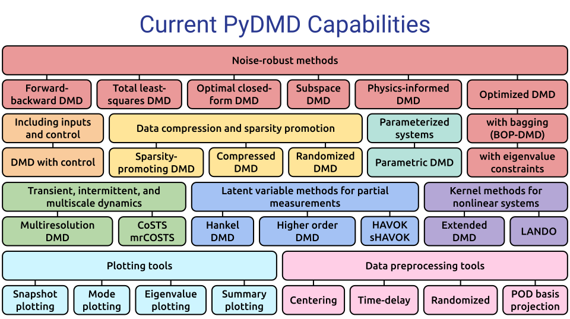

PyDMD: Python Dynamic Mode Decomposition#
Version: 0.0.1 | Useful links: Source Repository | Issue Tracker | PyPI
PyDMD is a Python package for Dynamic Mode Decomposition (DMD) — a data-driven method for analyzing and extracting spatiotemporal coherent structures from time-varying datasets. It implements both standard DMD and advanced variants, making it suitable for researchers, engineers, and data scientists across many fields.
New to PyDMD? Start here for a quick introduction and installation instructions.
Examples covering all DMD variants available in PyDMD, from basic usage to advanced techniques.
Detailed description of all classes, methods, and functions included in PyDMD.
Want to contribute to PyDMD? Learn how to set up your environment, write tests, and submit pull requests.
{kind=link}

Description#
PyDMD is a Python package designed for Dynamic Mode Decomposition (DMD), a data-driven method used for analyzing and extracting spatiotemporal coherent structures from time-varying datasets. It provides a comprehensive and user-friendly interface for performing DMD analysis, making it a valuable tool for researchers, engineers, and data scientists working in various fields.
With PyDMD, users can easily decompose complex, high-dimensional datasets into a set of coherent spatial and temporal modes, capturing the underlying dynamics and extracting important features. The package implements both standard DMD algorithms and advanced variations, enabling users to choose the most suitable method for their specific needs.
PyDMD offers seamless integration with the scientific Python ecosystem, leveraging popular libraries such as NumPy and SciPy for efficient numerical computations. It also offers a variety of visualization tools, including mode reconstruction, energy spectrum analysis, and time evolution plotting.
Video Introduction#
New to PyDMD? Watch this introduction to the DMD algorithm and learn how to get started with the package:
Developers and Contributors#
The main developers are:
{kind=link}
We warmly thank all contributors who have supported PyDMD! Do you want to join the team? Read the How to Contribute guidelines before starting.
Funding#
PyDMD has been supported by the H2020 ERC CoG 2015 AROMA-CFD project 681447 (P.I. Gianluigi Rozza), and the FSE HEaD project Bulbous Bow Shape Optimization through Reduced Order Modelling. We are grateful for all project and university-funded contributions that have advanced this package.
{kind=link}
{kind=link}